مثال: لیستی از پیامهای انگیزشی بسازید و با استفاده از ماژول random در هر اجرا یک پیام تصادفی چاپ کنید (شکل152).
برنامه را اجرا کنید و نتیجه را بررسی کنید.
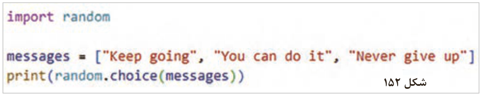
شکل ۱۵۲
روش دوم: وارد کردن بخشهای خاص (from ... import)
نام تابع import نام ماژول from در این روش، فقط توابع یا متغیرهای موردنیاز از یک ماژول وارد میشود. در این روش کد کوتاهتر و نوشتن سادهتر است.
مثال: فقط توابع sqrt و pow از ماژول math وارد برنامه میشوند (شکل153).
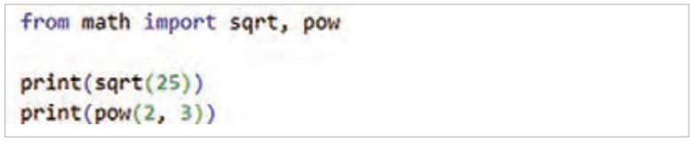
شکل ۱۵۳
صفحه ۷۵
بعد از این دستور؛ نیازی به نوشتن math.sqrt نیست. مستقیماً sqrt (25) نوشته میشود.
جدول ۵: ماژولهای پرکاربرد پایتون
ماژول
کاربرد
math
توابع ریاضی
random
تولید اعداد تصادفی
turtle
رسم شکل و گرافیک
datetime
تاریخ و زمان
os
کار با سیستمعامل
مثال: نمایش تاریخ و زمان فعلی: در این مثال فقط تابع now() مورد استفاده قرار گرفته است (شکل154).
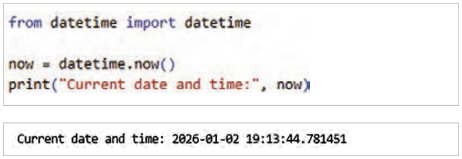
شکل ۱۵۴
مثال: در این مثال، فقط نمایش ساعتِ زمان فعلی، نیاز است. بنابراین از روش دوم واردکردن ماژول استفاده شده است (شکل155).
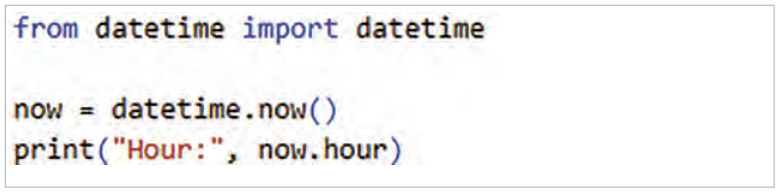
شکل ۱۵۵
صفحه ۷۶
ماژول محلی (local)
ماژولهایی هستندکه توسط برنامهنویس نوشته شده است و در برنامه import میشوند.
ابتدا یک فایل پایتون با پسوند py ایجاد کنید. سپس توابع و متغیرها را در آن قرار دهید. سپس میتوانید آنها را با import در برنامه اصلی استفاده کنید.
مثال: فایل my_module.py را ایجاد کنید و در آن کدهای زیر را بنویسید (شکل156).
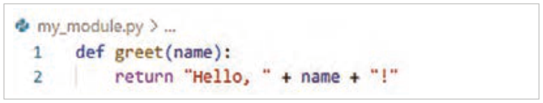
شکل ۱۵۶
سپس در برنامه اصلی main.py این کدها را بنویسید (شکل157).
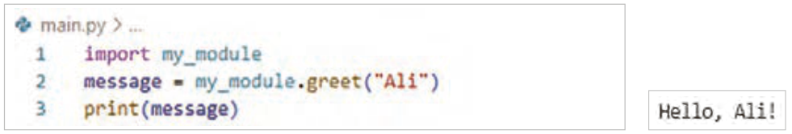
شکل ۱۵۷
مثال: ابتدا یک فایل با نام math_module.py بسازید و توابع زیر را داخل آن بنویسید (شکل158).
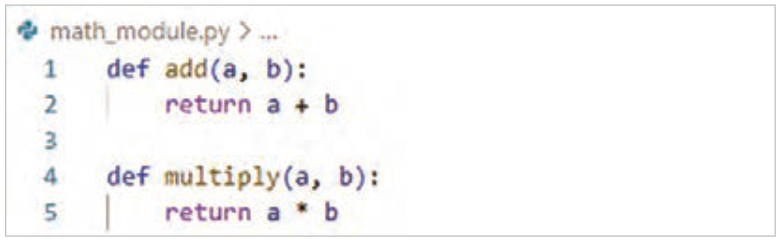
شکل ۱۵۸
صفحه ۷۷
سپس در برنامه اصلی از آن استفاده کنید (شکل 159).
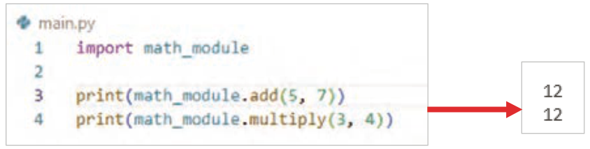
شکل ۱۵۹
ماژولهای شخص ثالث (3rd party): ماژولهایی که توسط دستور pip install نصب میشوند و در برنامه import میشوند. مثل Django، Flask, PyGame و...
تفاوت تابع و متد
در مطالب قبل، از دستوراتی مانند، split()، append() و len() استفاده کردهاید، بدون آنکه تعریف رسمی آنها بیان شود. این موضوع کاملاً طبیعی است و در برنامهنویسی بسیار رایج است؛ زیرا بسیاری از مفاهیم ابتدا با استفاده عملی و سپس با تعریف دقیق معرفی میشوند.
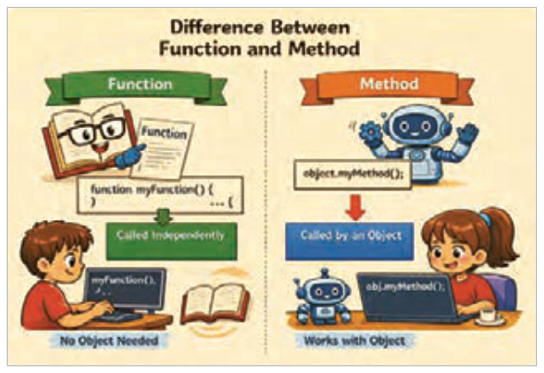
شکل ۱۶۰
صفحه ۷۸
تابع:(function) دستوری مستقل است که برای انجام یک کار مشخص به کار میرود و به نوع داده خاصی وابسته نیست.
مثال: شمردن تعداد کاربران: تابع len() تعداد کاراکترهای یک رشته را برمیگرداند (شکل161).
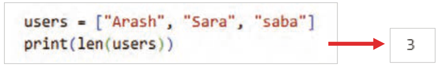
شکل ۱۶۱
مثال: نمایش تعداد کاربران بهصورت رشتهای (شکل162):
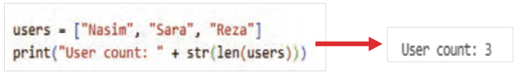
شکل ۱۶۲
متد (Method): نوعی تابع است که به یک کلاس یا شیء مشخص تعلق دارد و برای انجام عملیات روی دادههای همان شیء استفاده میشود.
تفاوت اصلی تابع و متد در نحوۀ استفاده و وابستگی آنهاست؛ تابعها بهصورت مستقل فراخوانی میشوند، اما متدها از طریق یک شیء یا نوع داده و با استفاده از علامت نقطه (.) اجرا میشوند و معمولاً به دادههای داخلی آن شیء دسترسی دارند.
متد lower, upper: با استفاده از متد lower, upper میتوانید همه متن را به حروف بزرگ یا کوچک انگلیسی تبدیل کنید.
صفحه ۷۹
متد split رشته را به لیستی از کلمات تجزیه میکند (شکل163).
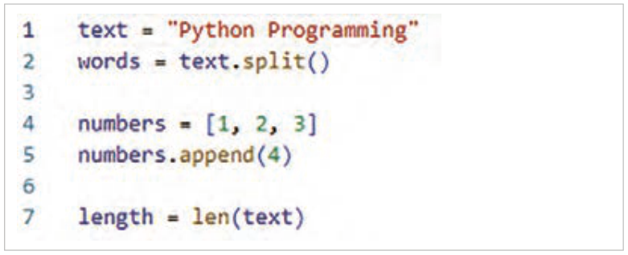
شکل ۱۶۳
Page 74
Example: build a list of motivational messages and use the random module to print a random message on each run (Figure 152).
Run the program and check the result.
Figure 152
The second way: importing specific parts (from ... import)
from module name import function name. In this method only the functions or variables needed are imported from a module. The code is shorter and simpler to write.
Example: only the sqrt and pow functions are imported from the math module (Figure 153).
Figure 153
Page 75
After this statement there is no need to write math.sqrt; you write sqrt (25) directly.
Table 5: Widely used Python modules
Module
Use
math
Math functions
random
Random numbers
turtle
Drawing and graphics
datetime
Date and time
os
Working with the operating system
Example: showing the current date and time: in this example only the now() function is used (Figure 154).
Figure 154
Example: in this example only the hour of the current time is needed, so the second way of importing is used (Figure 155).
Figure 155
Page 76
The local module
Modules written by the programmer and imported into the program.
First create a Python file with the py extension. Then put functions and variables in it. Then you can use them in the main program with import.
Example: create the file my_module.py and write the code below in it (Figure 156).
Figure 156
Then write this code in the main program main.py (Figure 157).
Figure 157
Example: first build a file named math_module.py and write the functions below in it (Figure 158).
Figure 158
Page 77
Then use it in the main program (Figure 159).
Figure 159
Third-party modules: modules that are installed with the command pip install and imported in the program. Like Django, Flask, PyGame and so on.
The difference between a function and a method
In the earlier material you used statements such as split(), append() and len() without their formal definition being given. This is completely natural and very common in programming, because many concepts are first introduced through practical use and then with an exact definition.
Figure 160
Page 78
Function: an independent statement that is used to do one specific job and does not depend on a specific data type.
Example: counting users: the len() function returns the number of characters in a string (Figure 161).
Figure 161
Example: showing the number of users as a string (Figure 162):
Figure 162
Method: a kind of function that belongs to a specific class or object and is used to do operations on the data of that same object.
The main difference between a function and a method is how they are used and what they depend on: functions are called independently, but methods run through an object or a data typeusing a dot (.), and usually have access to that object's internal data.
The lower and upper methods: with lower and upper you can turn all the text into lowercase or uppercase English letters.
Page 79
The split method breaks a string into a list of words (Figure 163).